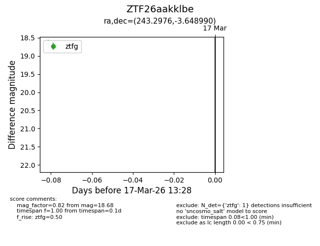
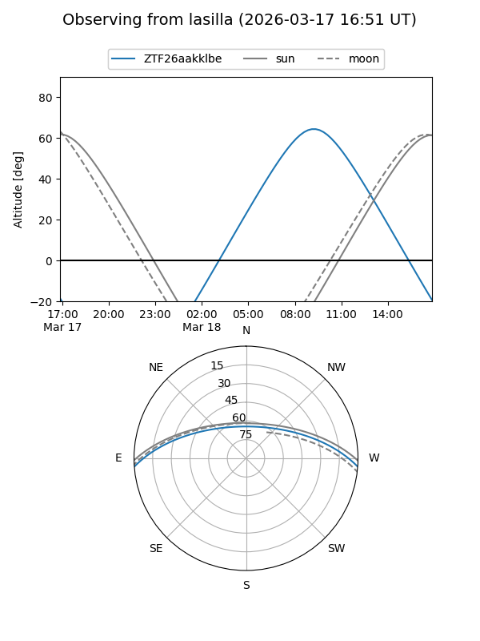
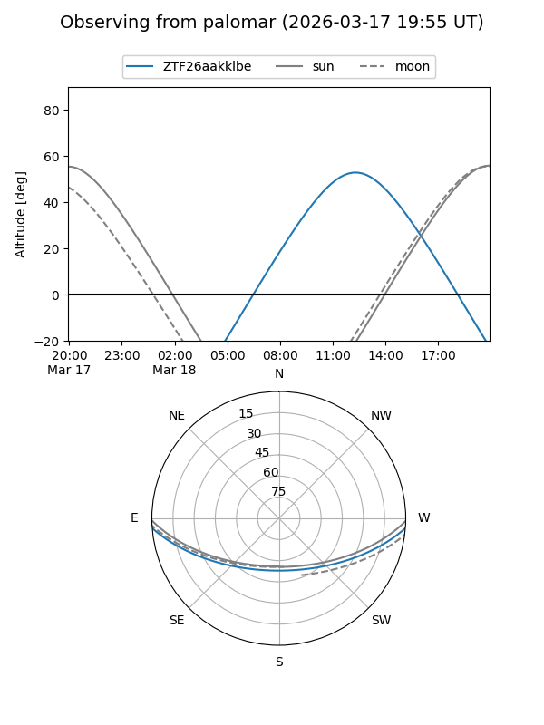

ZTF26aakklbe
Target ZTF26aakklbe at 2026-03-17 13:30
Aliases and brokers:
FINK: link
Lasair: link
ALeRCE: link
alt names
ZTF26aakklbe (ztf,fink_ztf)
Coordinates:
equatorial (ra, dec) = 243.2976,-3.64899
equatorial (HMS+DMS) = 16:13:11.41,-03:38:56.36
galactic (l, b) = (8.6883,+32.45752)
Flags:
Photometry:
last ztfg=18.68
1 ztfg detections
Lightcurve

Visibility


Additional plots